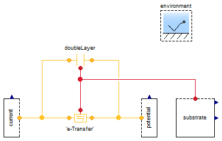

Examples
Information
Extends from
Modelica.Icons.ExamplesPackage (Icon for packages containing runnable examples).
Package Content
Demonstrate the Butler-Volmer overpotential

Information
Extends from
Modelica.Icons.Example (Icon for runnable examples).
Modelica definition
model Overpotential "Demonstrate the Butler-Volmer overpotential"
extends Modelica.Icons.Example;
output Q.Potential w=-'e-Transfer'.Deltag "Overpotential";
output Q.Current I_A=-'e-Transfer'.I/U.A if environment.analysis
"Reaction current in amperes";
Chemistry.Electrochemistry.ElectronTransfer 'e-Transfer'(
redeclare constant Integer n_trans=1,
fromI=false,
I0=U.mA);
Conditions.ByConnector.Chemical.Potential potential(
inclTransY=false,
inclTransZ=false,
chemical(redeclare constant Integer n_trans=1));
Conditions.ByConnector.Chemical.Current current(
inclTransY=false,
inclTransZ=false,
chemical(redeclare constant Integer n_trans=1),
redeclare Modelica.Blocks.Sources.Sine set(
freqHz=1,
amplitude=100*U.A,
phase=1.5707963267949));
Chemistry.Electrochemistry.DoubleLayer doubleLayer(
setVelocity=false,
inclVolume=false,
redeclare constant Integer n_trans=1,
w(fixed=true));
Conditions.ByConnector.Inter.Efforts substrate(
inclTransX=true,
inclTransY=false,
inclTransZ=false,
internalTransX=true,
internalTransY=true,
internalTransZ=true);
inner Conditions.Environment environment;
equation
connect(current.chemical, 'e-Transfer'.negative);
connect(potential.chemical, 'e-Transfer'.positive);
connect(doubleLayer.negative, 'e-Transfer'.negative);
connect(doubleLayer.positive, 'e-Transfer'.positive);
connect(substrate.inter, doubleLayer.inert);
connect(substrate.inter, 'e-Transfer'.inert);
end Overpotential;
Test the stoichiometry of the HOR

Information
Extends from
Modelica.Icons.Example (Icon for runnable examples).
Modelica definition
model Stoichiometry
"Test the stoichiometry of the HOR"
extends Modelica.Icons.Example;
HOR hOR(n_trans=3);
Conditions.ByConnector.Chemical.Potential H2(sT=1000*U.K, set(y=U.A));
Conditions.ByConnector.Chemical.Current 'e-'(sT=2000*U.K, redeclare Modelica.Blocks.Sources.Ramp
set(
height=100*U.A,
duration=100,
startTime=10,
offset=U.mA));
Conditions.ByConnector.Chemical.Potential 'H+'(sT=3000*U.K);
inner Conditions.Environment environment;
equation
connect(hOR.'chemH+', 'H+'.chemical);
connect(H2.chemical, hOR.chemH2);
connect('e-'.chemical, hOR.'cheme-');
end Stoichiometry;